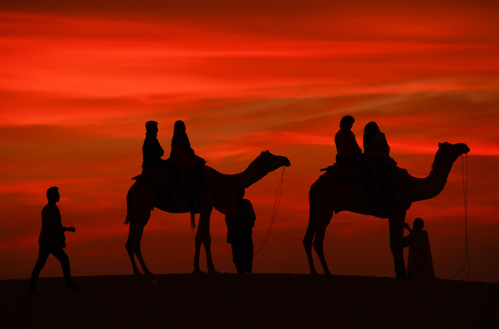

Udaipur → Jodhpur
5–6h260–280 km approx.₹5,500 target / car
Direct drive plus lunch and comfort breaks. Ranakpur is a separate detour decision; allow extra time and cost if chosen.
Published operator option ↗
Eight days through Rajasthan.
A little wonder, a little wandering. Just us.
Fly into Udaipur, follow the road through Jodhpur, then find the dunes beyond Jaisalmer. An overnight train brings us home on 6 January.
Geographic route sketch. Use the map link for actual roads and navigation.
Jodhpur breaks the long westward drive and gives us Mehrangarh. The desert is an outing from our Jaisalmer home, so a camp bathroom never needs to be a compromise.
Flights and all six stays were checked for your dates and two adults. Displayed prices are research snapshots; availability and final checkout may change. Train and car amounts remain allowances.
A plan with real stops, useful buffers, and room to enjoy being here.
Real entire-place Airbnb listings, chosen for privacy, location and winter comfort.
On 4 January, take a complete Sam or Khuri outing, then return to the same Jaisalmer home. No tent booking or overnight desert camp is built into this plan.
See the desert day ↗Fly in on 30 December. Come home by train on 6 January.
Observed Google Flights totals include required taxes/fees for two adults. Baggage/fare family and final checkout need review. Airline prices may change based on availability; review final price and fee details before booking.
Published schedule: 19:00 Jaisalmer → 10:35 Old Delhi next day. Target booking opening: 6 November 2026 under the usual 60-day rule; confirm the train’s actual reservation window. Class prices here are allowances; berths and selected-date operation are not confirmed.
Timetable source ↗ Reservation rule ↗Book two direct sedan transfers. Ask for a written final price including tolls, taxes, parking, driver allowance and agreed stops.
Direct drive plus lunch and comfort breaks. Ranakpur is a separate detour decision; allow extra time and cost if chosen.
Published operator option ↗Leave after breakfast and arrive before your lakeside evening. Confirm luggage drop-off near the fort with the host.
Rate-card reference ↗| Alternative | Time | For two | Trade-off |
|---|---|---|---|
| Udaipur → Jodhpur bus | 6–8h + transfers | ₹1,200–2,400 | No flexible sightseeing stops |
| Jodhpur → Jaisalmer train | 5–7h | ~₹1,000–1,800 in 3AC | Check the actual departure/arrival |
| Jodhpur → Jaisalmer bus | 5–7h | ₹800–2,000 | Add station/hotel transfers |
| Udaipur + Jodhpur / Osian | Removes Jaisalmer transfer | Reprice the full route | More downtime, but no Jaisalmer fort/havelis |
Keep this three-city itinerary unless you deliberately choose a slower two-city trip. Osian is about 65 km from Jodhpur and is a different desert experience.
Bus-route reference ↗All amounts are for both of us. Replace allowances with final quotes as we book.
for two · including contingency
Stay and flight lines start from displayed dated snapshots; other lines are allowances. Final checkout can change. Shopping is extra. Protect the contingency until bookings are confirmed.
Choices save in this browser only. Export a backup to share or restore on another device.